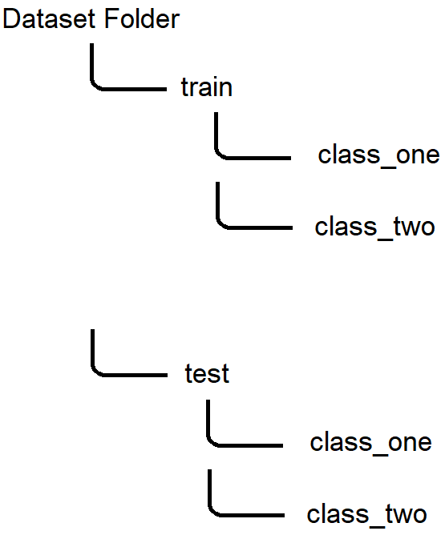

Data is the most important thing when making a machine learning/deep learning model, because how are we supposed to learn? We use the data that we are provided in a task to train and evaluate the model. Data can be found all over the internet. You can get data by scraping websites, finding datasets on websites like kaggle, which is the most famous website that provides data and hosts machine learning competitions. You can also be provided data as a spreadsheet, though you might have to do some cleaning using tools provided by 3rd party libraries in python. Although data is everywhere, it doesn't mean that all of it is beneficial. Some data maybe unlabeled, and in this case it'd be useless (except if you have days to label it yourself of course 😛).
Data In Pytorch
In Pytorch, we can either import data from our system (if already downloaded), or we can import standard data sets that is provided by Pytorch. These include the famous MNIST data set which is used for handwritten digit recognition.
Importing MNIST
First, we import MNIST from torchvision.datasets. You can find a lot of data sets there, though our focus now is on MNIST. Then we call an instance of MNIST. We set where we want our data to be saved by setting root='data/'. We set download to True so that we can download the data set. We also set transform to ToTensor() which will transform the image data to tensors, which we talked about in the first lesson which you can visit here. Data in Pytorch needs to be converted into tensors as it is what Pytorch uses. You can't use normal image files. There are also other types of transformations that can be applied (they can be joined together too).
After we have imported the data, we need to divide it into 2, the training set and the validation set. Here the validation set is of size 10000 and the training set is 60000. This is the data set (not including the test set) is comprised of 60000 images.
Here we put our data in DataLoaders. They are iterables that divide our data into batches when you iterate over them. We have batches so that the memory can fit in memory, as we can't fit all these images all at once! We have the batch size in the validation set double the batch size in the training set. This is because we don't need to do any learning which takes up memory. shuffle=True allows us to have differently generated batches each epoch. This shuffling allows the model to generalized quicker. The validation loader doesn't need to be shuffled as it is only used for validation.
Now we import the training data and make a DataLoader out of it. The MNIST class has train set to False, meaning we want the other part of the data that has been put aside for testing.
Importing Tabular Data
To import tabular data and make a model for it in Pytorch, you can first import the data and load it using numpy, then you can change the numpy array into a tensor using the torch.from_numpy() function. Then put the inputs and targets in a TensorDataset. Then you split the data set into a training and test set using random_split(), then create a DataLoader for each partition.
Importing Image Data
There are many folder structures when downloading image data on the internet. This one can be seen quite often. If your data set is divided into a training set and test set, and each class has its own folder, then you can import the data as follows:
We create an ImageFolder with the folder of the training data and apply a ToTensor() transformation, then we split the data into a training set and a validation set using random_split(). We then set the batch_size to some number, then we create a DataLoader for each partition.
We create an ImageFolder for the test folder, and apply the same transformation, then we create a DataLoader.
Data Augmentation/Normalization
We decided to make this part separate from the code above so that you can grasp everything. Data augmentation is very important in deep learning. They are random transformations that get applied to the data randomly. This helps the model to be more generalized as it doesn't see the same images every epoch.

Here we are composing some transforms that will be applied to the training data using tt.Compose. There are a lot of transforms that you can get with Pytorch, here we have a few. You can search the internet for some that you might want to apply.
Data normalization is also plays a very important role. It keeps the input into a smaller range than before. It helps the model to converge quickly as the weights don't need to keep changing due to the difference in ranges. It also prevents the values from any channel from unfairly affecting the gradients while training because it has a bigger range of values than other channels. It isn't necessary however, but it will be required when the inputs have different ranges. Do keep that in mind!
We normalize the data by subtracting the mean and dividing by the standard deviation across each channel.

This is how we normalize the data:
First I define the mean and standard deviation that I want to use, then I compose a few transformations to be applied to the data (in this case I only changed the data to tensors), then I normalize the data using stats. We put an asterisk here so that we don't need to manually put each element of stats as an argument. We set inplace to True so that we change the input directly rather than making copies of the data which saves memory.
Conclusion
So we were able to import data from our computer using Pytorch. In the next lessons we will use this data to train a model on it. See you next lesson!